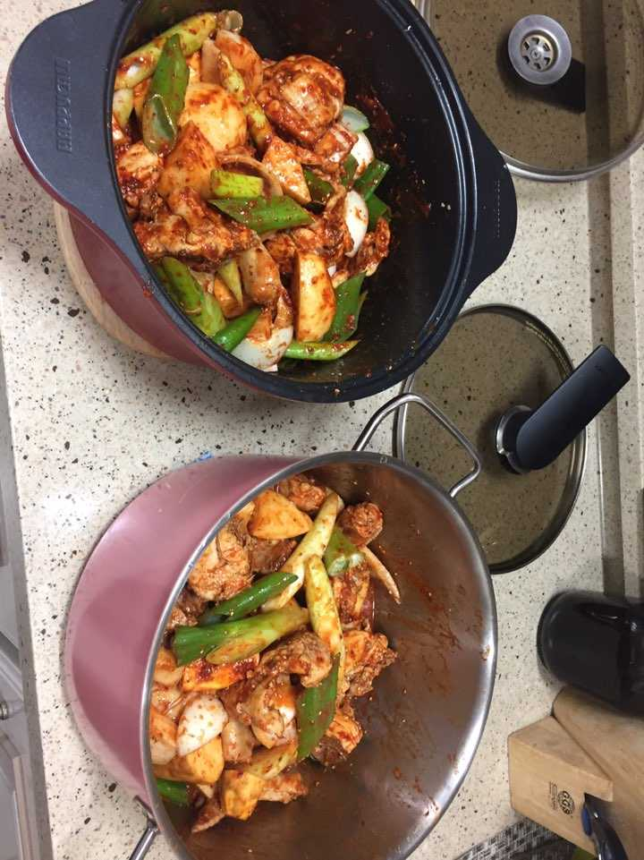
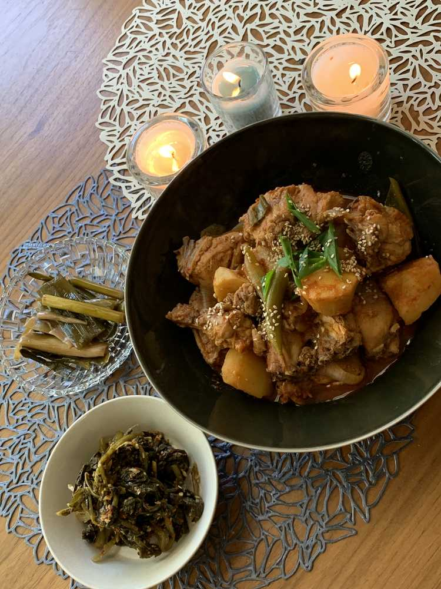
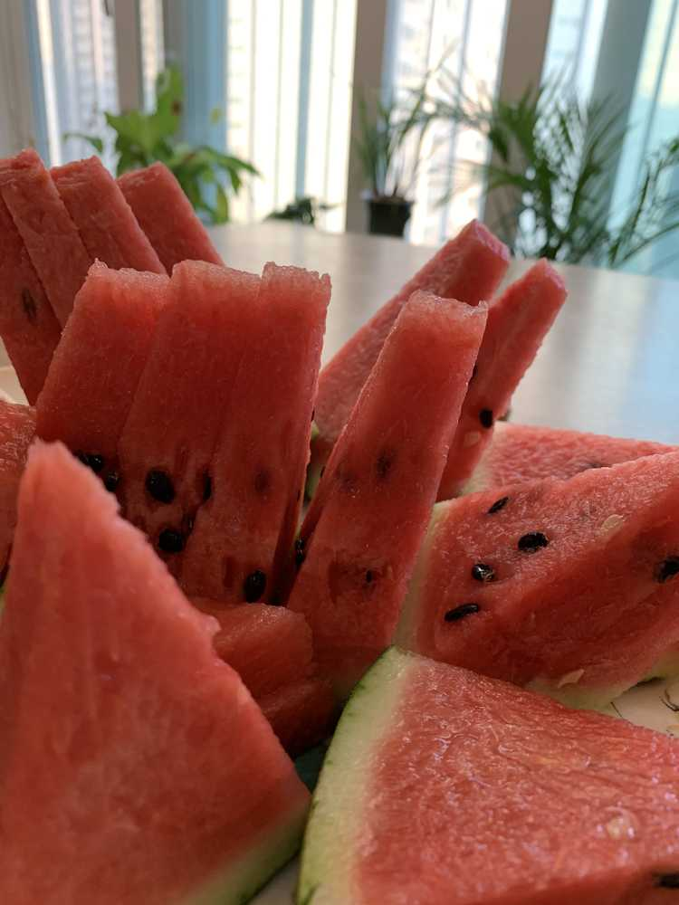

닭볶음탕 먹고 싶다고 그렇게 노래를 불렀는데
엄마가
내가 강된장 먹고 싶다고 노래를 불렀다고
생각해서 미리 강된장이랑 호박잎을 사두셨다..
평소 같으면 그냥 먹을텐데..
최근에 강된장을 해놓고 2일 연속으로 먹었더니..
땡기지가 않아서...
생각해보니까 엄마한테 양배추 삶는 방법만 물어보고..
강된장을 먹은 건 프라이빗 메일을 보지 못했으니까...
무튼 같이 장을 보러 가구
가는 김에 우리 숙소 애들 고기도 사구
닭볶음탕 하는 김에 애들 줄 한 솥 더 끓이구궁
엄마가 양념을 다 하구 손질만 내가 했지만
어깨너머 이제 배웠으니 담번에 제가 한 번 해봐야지 ㅎㅎ

끓이기 전 사진이였구
요거는

식사 사진
후식 사진도 있어염...

이호도 줄거운 식사 했길 💕
今日、
食べたかった物を
お母さんといっしょに料理して
食べました。
ダルクボクムタン？という
食べ物です。
私がしゃしん撮りたいと言ったばかり
お母さんが今まで見られなかった皿とお箸を
じゅんびをしてかざりました。おもしろかったです。
이호も
楽しく
夕食食べてね💕